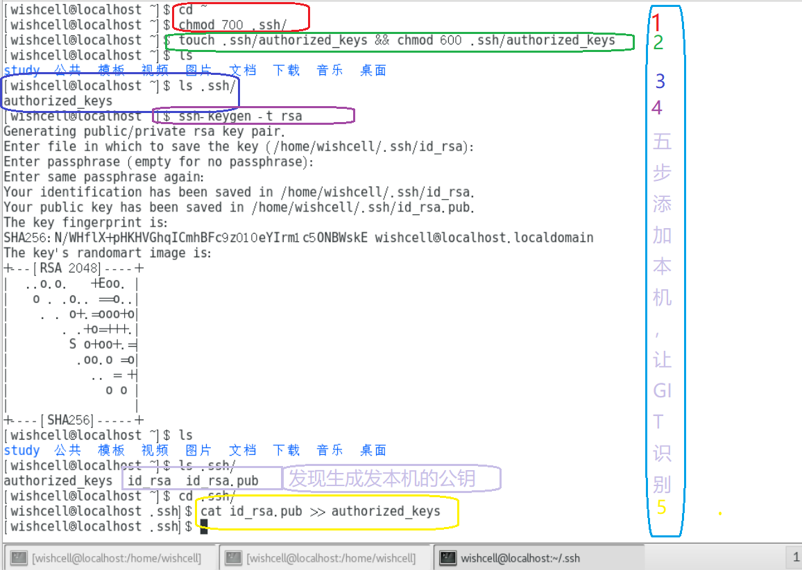
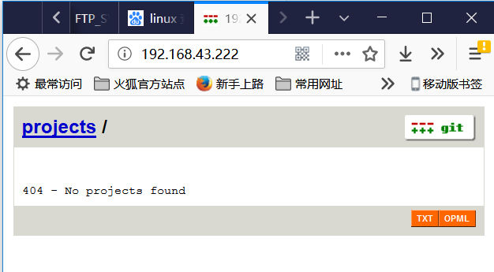

GIT 知识汇总一、本地创建远程 git 仓库(抄录自廖雪峰的网站)管理公钥管理权限2018-01-17[21:53]查看 git每次的入库详情二、Git 创建一个库，接收远程入库(吸收自Pro Git)1、为git 创建一个用户，或者使用现有用户。2、为 wishcell 用户添加 git 支持3、添加客户机公钥4、在服务器上创建一个git 库目录5、客户机上拉取代码，提交代码6、推送远程服务器7、另起一个目录，拉取刚刚提交上去的代码三、GIT服务器IP改变怎么办四、为git服务器提供 http拉取代码的方法1、2、3、五、 git服务器提供 web 访问服务器代码的能力1、下载 git 代码，然后编译 gitweb2、添加一个虚拟主机3、运行/重启apache服务4、在客户机浏览器中查看代码
第一步，安装git：
$ sudo apt-get install git
第二步，创建一个git用户，用来运行git服务：
xxxxxxxxxx$ sudo adduser git
第三步，创建证书登录：
收集所有需要登录的用户的公钥，就是他们自己的id_rsa.pub文件，把所有公钥导入到/home/git/.ssh/authorized_keys文件里，一行一个。
第四步，初始化Git仓库：
先选定一个目录作为Git仓库，假定是/srv/sample.git，在/srv目录下输入命令：
xxxxxxxxxx$ sudo git init --bare sample.gitGit就会创建一个裸仓库，裸仓库没有工作区，因为服务器上的Git仓库纯粹是为了共享，所以不让用户直接登录到服务器上去改工作区，并且服务器上的Git仓库通常都以.git结尾。然后，把owner改为git：
xxxxxxxxxx$ sudo chown -R git:git sample.git第五步，禁用shell登录：
出于安全考虑，第二步创建的git用户不允许登录shell，这可以通过编辑/etc/passwd文件完成。找到类似下面的一行：
xxxxxxxxxxgit:x:1001:1001:,,,:/home/git:/bin/bash改为：
xxxxxxxxxxgit:x:1001:1001:,,,:/home/git:/usr/bin/git-shell这样，git用户可以正常通过ssh使用git，但无法登录shell，因为我们为git用户指定的git-shell每次一登录就自动退出。
第六步，克隆远程仓库：
现在，可以通过git clone命令克隆远程仓库了，在各自的电脑上运行：
$ git clone git@server:/srv/sample.gitCloning into 'sample'...warning: You appear to have cloned an empty repository.剩下的推送就简单了。
如果团队很小，把每个人的公钥收集起来放到服务器的/home/git/.ssh/authorized_keys文件里就是可行的。如果团队有几百号人，就没法这么玩了，这时，可以用Gitosis来管理公钥。
这里我们不介绍怎么玩Gitosis了，几百号人的团队基本都在500强了，相信找个高水平的Linux管理员问题不大。
有很多不但视源代码如生命，而且视员工为窃贼的公司，会在版本控制系统里设置一套完善的权限控制，每个人是否有读写权限会精确到每个分支甚至每个目录下。因为Git是为Linux源代码托管而开发的，所以Git也继承了开源社区的精神，不支持权限控制。不过，因为Git支持钩子（hook），所以，可以在服务器端编写一系列脚本来控制提交等操作，达到权限控制的目的。Gitolite就是这个工具。
这里我们也不介绍Gitolite了，不要把有限的生命浪费到权限斗争中。
git每次的入库详情 x
1、git log --name-status #每次修改的文件列表，显示状态2、git log --name-only #每次修改的文件列表3、git log --stat #每次修改的文件列表，及文件修改的统计4、git whatchanged --stat #每次修改的文件列表，及文件修改的统计5、git show #显示最后一次的文件改变的具体内容
Pro Git) 本例使用账号 wishcell/wishcell
x
15900@DESKTOP-CGPRCF3 MINGW64 ~/.ssh$ ssh-keygen.exe -t rsaGenerating public/private rsa key pair.Enter file in which to save the key (/c/Users/15900/.ssh/id_rsa):Enter passphrase (empty for no passphrase):Enter same passphrase again:Your identification has been saved in /c/Users/15900/.ssh/id_rsa.Your public key has been saved in /c/Users/15900/.ssh/id_rsa.pub.The key fingerprint is:SHA256:VszUc4m4u7uSAEK1A8A+B76lRppmI1PQVrg5T+AzZ8Q 15900@DESKTOP-CGPRCF3The key's randomart image is:+---[RSA 2048]----+|oo.=o .o . . ||.o*.E. +. + o ||o=.=o +. o || =Xo=. .. ||oo*X . S . ||=B . .. . ||=.. . . . || o . || .oo |+----[SHA256]-----+15900@DESKTOP-CGPRCF3 MINGW64 ~/.ssh$ cat ~/.ssh/id_rsa.pubssh-rsa AAAAB3NzaC1yc2EAAAADAQABAAABAQC9vB6oXS0L4E/gComo04kuoyggRPDevMXLc6vDm//ep6L6QOxav/x/yO4yiyLbEDIzQVOBcxGmVhx4PJrOn6lhHcPlFgWC6/YzMHG01rFHjw27hLUejGxtOueyT2DisWvIX69a8IpTbJ4ZcwMP5lNypKAmlhDi41uWs0FKM2no7nkiVOKZ8YYoZ5tD0MF6xQgMg5y+oqSddg8uOm5r4t4Wsa7AWGqW33b7Yq6rrSqY188qJwwnsuyEbarvLvyezpGCC63javZ1WuLZdf0vjb8jbYwUKmejAVosZ5ZgUbDlDaqQ3bHyJAa4LOGl+6RcbHAlWZNBSmDDCc5NoABjUqLN 15900@DESKTOP-CGPRCF3然后将此内容 cat 追加到git服务器的authorized_keys x
[wishcell@localhost study]$ pwd/home/wishcell/study[wishcell@localhost study]$ mkdir gitRepository[wishcell@localhost study]$ lsada c gitRepository python[wishcell@localhost study]$ cd gitRepository/[wishcell@localhost gitRepository]$ ls[wishcell@localhost gitRepository]$ git init --bareInitialized empty Git repository in /home/wishcell/study/gitRepository/[wishcell@localhost gitRepository]$ lsbranches config description HEAD hooks info objects refs[wishcell@localhost gitRepository]$ xxxxxxxxxx$ git clone wishcell@192.168.1.222:/home/wishcell/study/gitRepositoryCloning into 'gitRepository'...The authenticity of host '192.168.1.222 (192.168.1.222)' can't be established.ECDSA key fingerprint is SHA256:2U1eQw3P2lIyp6PE16sCkYuPvfBd6A9F8USXc4/nZUk.Are you sure you want to continue connecting (yes/no)? yesWarning: Permanently added '192.168.1.222' (ECDSA) to the list of knownhosts.warning: You appear to have cloned an empty repository.15900@DESKTOP-CGPRCF3 MINGW64 /e/tmp$ lsgitRepository/15900@DESKTOP-CGPRCF3 MINGW64 /e/tmp$ cd gitRepository/15900@DESKTOP-CGPRCF3 MINGW64 /e/tmp/gitRepository (master)$ touch a.c$ git add ./ x
提交代码时报错：$ git commit*** Please tell me who you are.Run git config --global user.email "you@example.com" git config --global user.name "Your Name"to set your account's default identity.Omit --global to set the identity only in this repository.fatal: unable to auto-detect email address (got '15900@DESKTOP-CGPRCF3.(none)')配置用户解决之：15900@DESKTOP-CGPRCF3 MINGW64 /e/tmp/gitRepository (master)$ git config --global user.email "15900748704@139.com"$ git commit[master (root-commit) dca7e2d] this is the first test file 1 file changed, 1 insertion(+) create mode 100644 a.c x
$ git commit[master (root-commit) dca7e2d] this is the first test file 1 file changed, 1 insertion(+) create mode 100644 a.c $ git push origin masterCounting objects: 3, done.Writing objects: 100% (3/3), 227 bytes | 56.00 KiB/s, done.Total 3 (delta 0), reused 0 (delta 0)To 192.168.1.222:/home/wishcell/study/gitRepository * [new branch] master -> master x
[wishcell@localhost gitClient]$ git clone wishcell@192.168.1.222:/home/wishcell/study/gitRepositoryCloning into 'gitRepository'...The authenticity of host '192.168.1.222 (192.168.1.222)' can't be established.ECDSA key fingerprint is SHA256:2U1eQw3P2lIyp6PE16sCkYuPvfBd6A9F8USXc4/nZUk.ECDSA key fingerprint is MD5:44:c3:f5:03:7c:ca:17:81:61:41:2b:0b:12:11:49:16.Are you sure you want to continue connecting (yes/no)? yesWarning: Permanently added '192.168.1.222' (ECDSA) to the list of known hosts.remote: Counting objects: 3, done.remote: Total 3 (delta 0), reused 0 (delta 0)Receiving objects: 100% (3/3), done.[wishcell@localhost gitClient]$ lsgitRepository[wishcell@localhost gitClient]$ cd gitRepository/[wishcell@localhost gitRepository]$ lsa.c[wishcell@localhost gitRepository]$ cat a.cthis is a file![wishcell@localhost gitRepository]$GIT服务器IP改变怎么办 x
git remote -v 查看远程库git remote rm origingit remote add origin ssh://*g*****.git xxxxxxxxxx实例，改变虚拟机GIT服务器IP地址：[root@localhost gitRepository]# git remote -vorigin wishcell@192.168.1.222:/home/wishcell/study/gitRepository (fetch)origin wishcell@192.168.1.222:/home/wishcell/study/gitRepository (push)[root@localhost gitRepository]# git remote rm origin[root@localhost gitRepository]# git remote -v[root@localhost gitRepository]# git remote add origin wishcell@192.168.43.222:/home/wishcell/study/gitRepository[root@localhost gitRepository]# git remote -vorigin wishcell@192.168.43.222:/home/wishcell/study/gitRepository (fetch)origin wishcell@192.168.43.222:/home/wishcell/study/gitRepository (push)修改完毕之后，尝试重新拉取代码，却被要求输入密码：[root@localhost gitRepository]# git pullThe authenticity of host '192.168.43.222 (192.168.43.222)' can't be established.ECDSA key fingerprint is SHA256:2U1eQw3P2lIyp6PE16sCkYuPvfBd6A9F8USXc4/nZUk.ECDSA key fingerprint is MD5:44:c3:f5:03:7c:ca:17:81:61:41:2b:0b:12:11:49:16.Are you sure you want to continue connecting (yes/no)? yesWarning: Permanently added '192.168.43.222' (ECDSA) to the list of known hosts.wishcell@192.168.43.222's password:From 192.168.43.222:/home/wishcell/study/gitRepository * [new branch] master -> origin/masterThere is no tracking information for the current branch.Please specify which branch you want to merge with.See git-pull(1) for details git pull <remote> <branch>If you wish to set tracking information for this branch you can do so with: git branch --set-upstream-to=origin/<branch> master[root@localhost gitRepository]#
git服务器提供 http拉取代码的方法git服务器提供 web 访问服务器代码的能力gitweb xxxxxxxxxx首先下载 git 代码$ git clone git://git.kernel.org/pub/scm/git/git.git然后进入到 git 目录，编译 gitweb，编译时要指定 git 项目的库所在位置$ make GITWEB_PROJECTROOT="/opt/git" prefix=/usr gitweb SUBDIR gitweb SUBDIR ../make[2]: `GIT-VERSION-FILE' is up to date. GEN gitweb.cgi GEN static/gitweb.js 需要注意的是，你需要在命令中指定 GITWEB_PROJECTROOT 变量来让程序知道你的 Git 版本库的位置。 现在，你需要在 Apache 中使用这个 CGI 脚本，你需要为此添加一个虚拟主机 x
[root@localhost gitRepository]# cd /etc/httpd/conf[root@localhost conf]# lshttpd.conf httpd.conf.bk magic vhosts[root@localhost conf]# vim httpd.conf[root@localhost conf]#在 httpd.conf 中添加一句：Include /etc/httpd/conf/vhosts/gitserver，位置在 Group 之后， ServerAdmin 之前：User apacheGroup apache# 'Main' server configuration## The directives in this section set up the values used by the 'main'# server, which responds to any requests that aren't handled by a# <VirtualHost> definition. These values also provide defaults for# any <VirtualHost> containers you may define later in the file.## All of these directives may appear inside <VirtualHost> containers,# in which case these default settings will be overridden for the# virtual host being defined.#Include /etc/httpd/conf/vhosts/gitserver## ServerAdmin: Your address, where problems with the server should be# e-mailed. This address appears on some server-generated pages, such# as error documents. e.g. admin@your-domain.com#ServerAdmin root@localhost然后编辑虚拟机配置文件：/etc/httpd/conf/vhosts/gitserver
<VirtualHost *:80> ServerName gitserver DocumentRoot /var/www/gitweb <Directory /var/www/gitweb> Options ExecCGI FollowSymLinks SymLinksIfOwnerMatch AllowOverride All order allow,deny Allow from all AddHandler cgi-script cgi DirectoryIndex gitweb.cgi </Directory></VirtualHost>apache服务 xxxxxxxxxx[root@localhost conf]# systemctl restart httpd.service此效果很不尽如人意：
1、没有看到预期的 git 项目代码，按照理想状态，此实验 git 中有项目代码
2、虚拟机指定为80端口，不能指定为其它端口，否则无法访问
即只有一个虚拟机，意义不大
